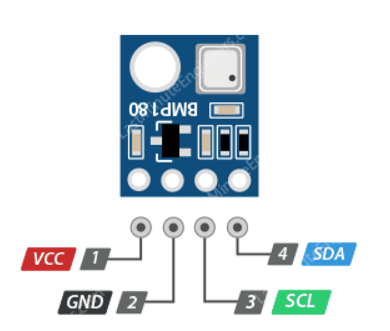

Barometre de Fusée
INFO DE CAPTEUR
-
Participer à une démarche de projet pluri technologique
-
Imaginer, matérialiser tout ou une partie d’une solution technique pour répondre à un besoin
-
Expérimenter et qualifier la solution retenue
-
Communiquer, justifier ses choix collectivement ou individuellement
Brochage
Rouge – (VIN) pouvoir pour alimentation (5V) Noir – (GND) ground - terre
Vert- (SCL) une broche d'horloge série pour l'interface I2C
Bleu- (SDA) broche de données série pour l'interface I2C.
BMP180
